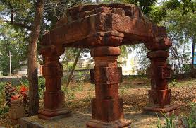
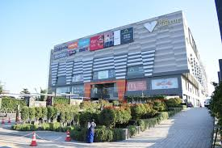
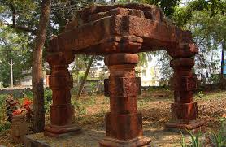
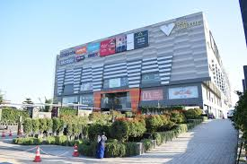
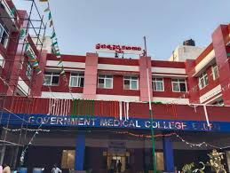
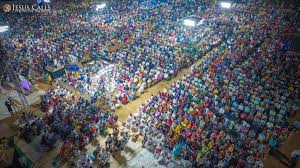
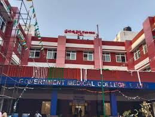
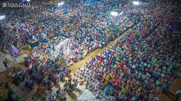

ELURU
 



WELLCOME TO ELURU
Where culture meets progrss. Explore the beauty, heritage and opportunities our city offers. Explore Now
 



What's Happening
Ganganamma Jathara
Police Parded 2 Rowdy Sheeters
About ELURU
Eluru is a significant city in Andhra Pradesh, India, known as the administrative headquarters of Eluru District, located near the Tammileru River and Godavari-Krishna delta. Famous for its handmade carpets (pile carpets), textiles, and as a trade hub for rice, oilseeds, and tobacco, Eluru blends historical significance with modern commerce, offering cultural sites, local delicacies like Kakinada Kaja, and a developing urban landscape
Key Facts
- Location: Northeast-central Andhra Pradesh, India.
- District: Seat of Eluru District.
- Economy: Manufacturing (carpets, textiles, leather) and trade (rice, oilseeds, tobacco).
- Culture: Rich Telugu culture with Buddhist historical remnants nearby.
- Motto: "Truth always Triumphs" (Satyam Jayate).
Places to Visit
Buddha Park
The Eluru Buddha Park is a prominent cultural and historical landmark in Andhra Pradesh, featuring an iconic 74-foot tall standing Buddha statue and promoting the region's rich Buddhist heritage.
Qusion Balls
Qusion Balls Eluru matter" appears to refer to a local business or gaming zone in Eluru, India, named Ques & Balls, rather than a general "cushion balls" product or a specific news event
Venkateswara Swamy Temple
The "Venkateswara Temple in Eluru" likely refers to the famous Dwaraka Tirumala Temple (Chintalapudi Mandal), known as 'Chinna Tirupati', a major Lord Venkateswara shrine in Eluru District, AP, featuring unique Dravidian architecture, a south-facing deity, and strong mythological links to Seshachalam Hills, distinct from the main Tirumala temple.
SVC mall
This is a notable multiplex in Eluru, known for its 4K resolution, Dolby Atmos sound system, and amenities like recliners, mobile ticketing, and parking. It is located in Ameenapet, opposite the New Bus Stand.
E4
E Four Eluru Amusement Park, a family entertainment center located in the city of Eluru, Andhra Pradesh, India.
Kolleru Lake
is a vast freshwater lake and wildlife sanctuary located approximately 15-30 km from the city of Eluru. It is a significant ecological site recognized as a wetland of international importance under the Ramsar Convention.
Food & Culture
Eluru is a city where heritage lives in every corner, and its food and culture capture the true spirit of coastal Andhra. The moment you step into Eluru, you feel the calm charm of a town that honors its traditions while slowly embracing modern life. The culinary culture here is shaped by the flavors of Andhra Pradesh—bold, aromatic, spicy, and incredibly satisfying. From the tangy pulusulu and comforting pappu to the crispy vadas and fresh coastal-style fish curries, every meal in Eluru feels like it’s cooked with warmth and pride. Street food stalls bring the city alive in the evenings, offering everything from hot bajjis and Mirchi bajjis to sweet delights like Bobbatlu and Pootharekulu. Eluru’s cultural heart beats strongly through its art and festivals. The city is globally known for its beautifully handwoven Eluru carpets, a craft that has been nurtured for generations. Festivals like Sankranti, Ugadi, Dussehra, and Deepavali are celebrated with joy, traditional rituals, and colorful gatherings that reflect the deep cultural roots of the region. Temples around the city—such as the famous Sanivarapupeta temples—stand as symbols of faith and age-old artistry. What makes Eluru truly special is the warmth of its people. Community bonds are strong, and celebrations are shared with enthusiasm, music, dance, and traditional foods. Whether you’re exploring its markets, tasting its local dishes, or joining the cultural festivities, Eluru offers an experience that is rich, welcoming, and deeply connected to Andhra’s heritage.
Book Your Hotel
N Square
is a highly-rated, luxurious hotel located in the RR Pet area of Eluru, near GV Mall. It offers modern amenities and is suitable for both business and family stays.
Sri Krishna Recidency
a highly-rated accommodation in Eluru known for its clean, spacious rooms and convenient location. It offers amenities like free Wi-Fi and dedicated parking.
Aditya Prince
is a 3-star hotel located in the main city area of Eluru, offering low-key rooms, a restaurant, and free parking. It is well-regarded for its prime location and good food.
AK Plaza
is a hotel and banquet hall facility located in Santhi Nagar, Eluru, known for its reasonable prices and good location. It is highly rated by guests for its hygiene and friendly staff.
Festivals
Ganganamma Jatara is a deeply revered festival celebrated with immense devotion in many villages across Andhra Pradesh. Dedicated to Goddess Ganganamma, who is worshipped as the guardian and protector of the community, this jatara reflects the emotional connection people share with their local deities. The festival usually takes place once a year, and preparations begin weeks in advance as villagers clean the temple surroundings, decorate the streets, and organize cultural programs to honor their goddess. The heart of the jatara lies in its traditional rituals, many of which have been followed for generations. Devotees offer coconuts, turmeric, kumkum, neem leaves, and specially prepared prasadam to Goddess Ganganamma, believing that she protects their village from diseases, calamities, and negative energies. Some villages also perform special poojas like Pallaki Seva, Bonalu, or Ammavari Alankaram, where the goddess is beautifully decorated with flowers, silks, and ornaments. These rituals create an atmosphere filled with devotion, chanting, and spiritual energy. Along with religious practices, the jatara stands out for its colorful cultural traditions. Folk dancers, drummers, and local artists participate enthusiastically, creating a festive mood throughout the celebrations. Traditional forms like Teenmaar, Dappu Nrityam, and Haridasu performances bring back the essence of rural art. Many people who live in towns and cities return to their native village during the jatara, making it a reunion of families, relatives, and old friends. This adds a warm emotional touch to the festival. One of the major attractions of Ganganamma Jatara is the vibrant fair (shandy) set up near the temple. The entire area turns lively with stalls selling toys, eateries offering local snacks, traditional bangles, handicrafts, and more. Children enjoy the rides and games, while elders indulge in shopping and meeting people. This fair becomes a symbol of social bonding, economic activity, and collective celebration. As night falls, the jatara becomes even more mesmerizing with lights, devotional songs, and cultural performances. The sight of thousands of devotees gathered with faith, hope, and joy creates a powerful and unforgettable experience. For many villagers, Ganganamma Jatara is not just a festival — it is a symbol of unity, tradition, gratitude, and the divine presence that watches over their community.